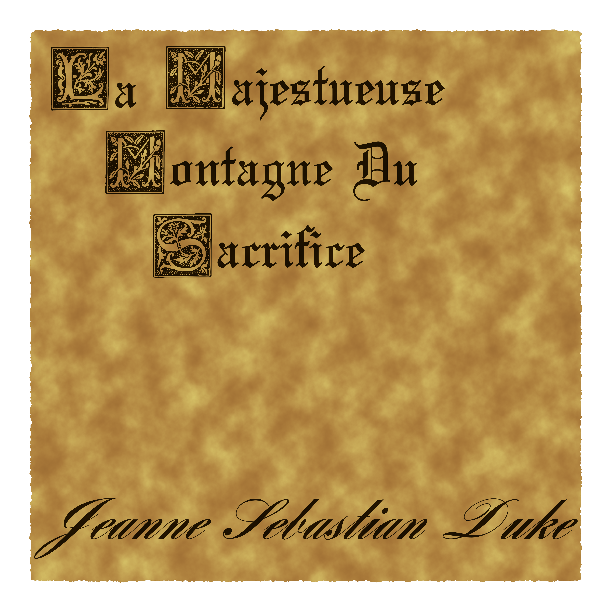
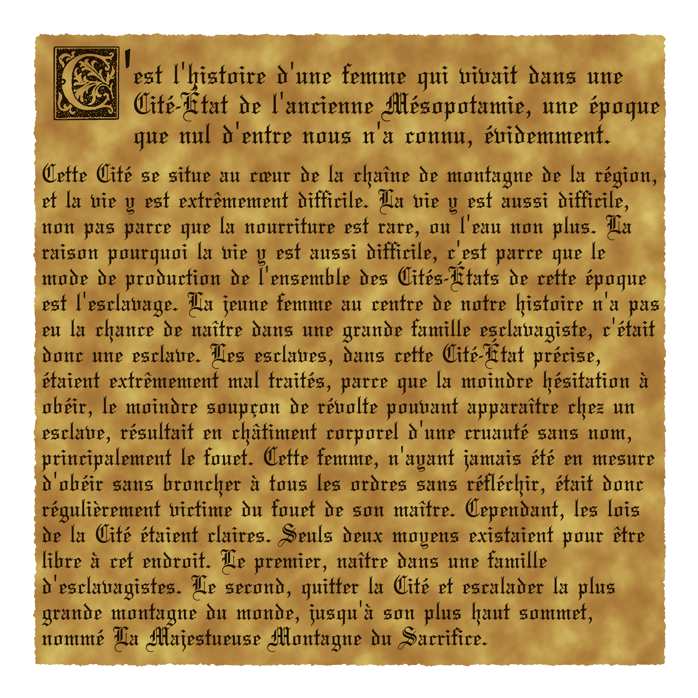
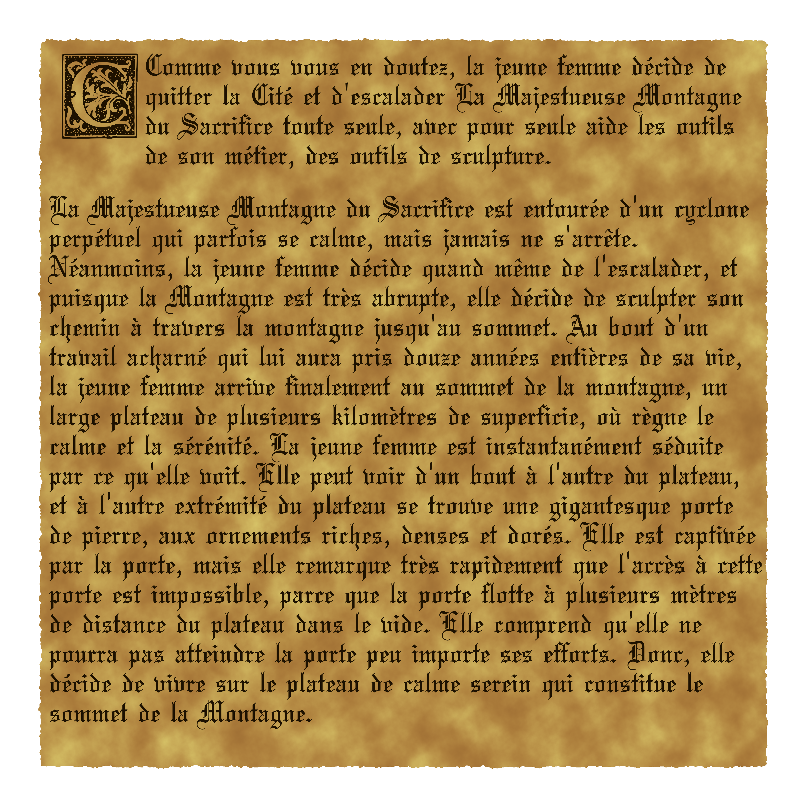
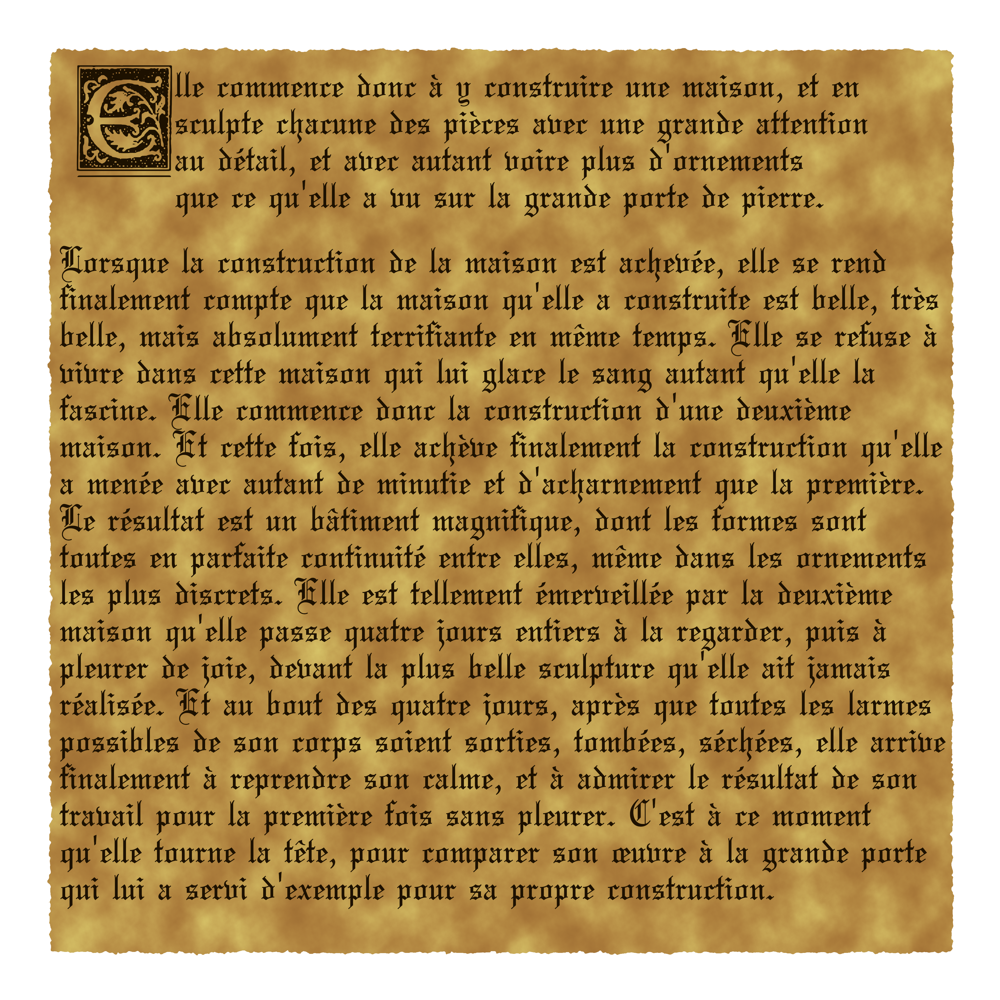
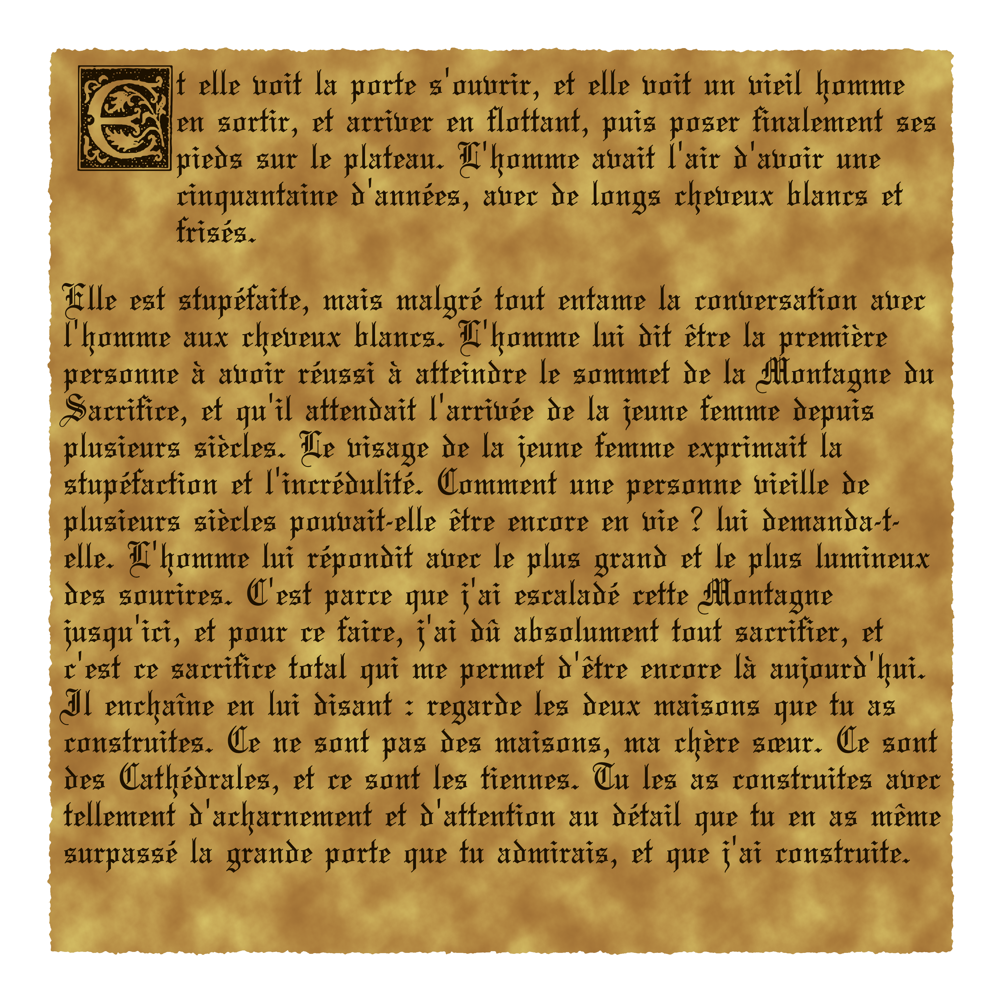
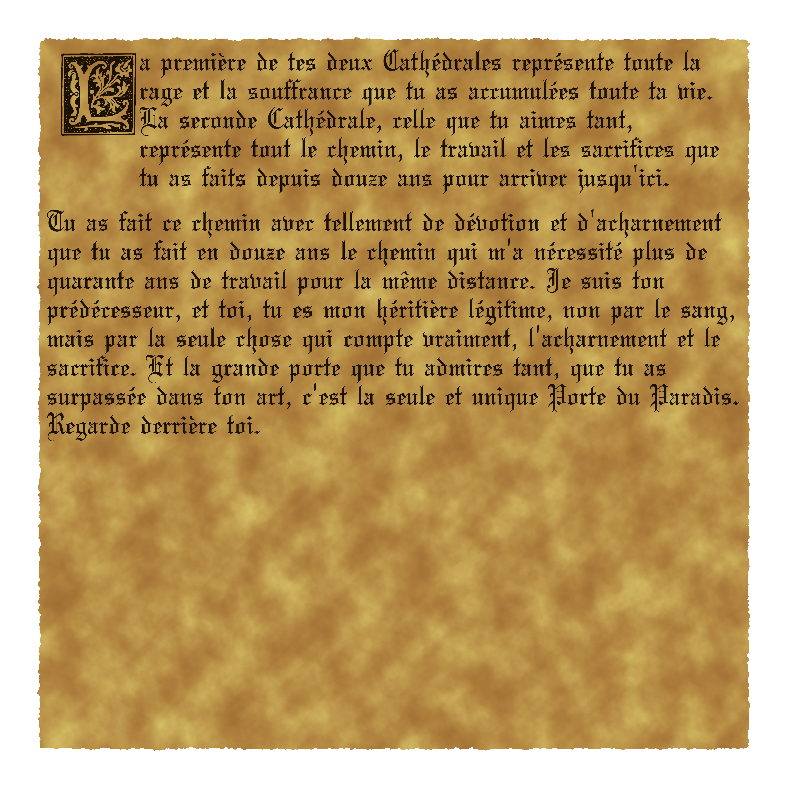
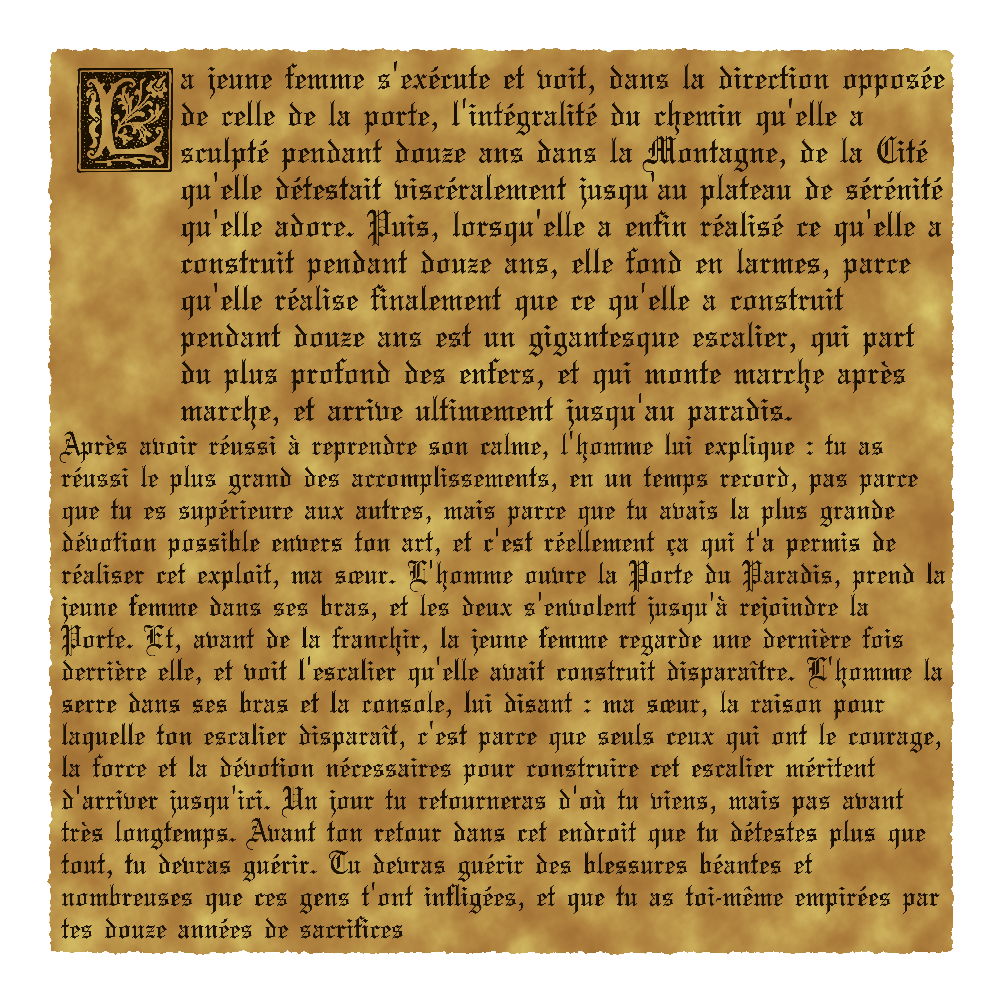
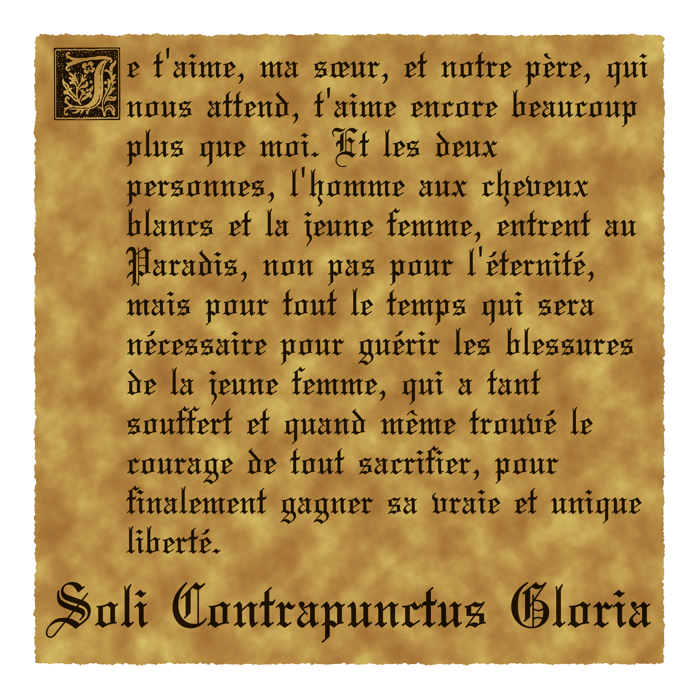

The Majestic Mountain of Sacrifice
This is the story of a woman who lived in a city-state of ancient Mesopotamia, an era that none of us ever knew, evidently. The City stood at the heart of the region’s mountain chain, and life there was extremely difficult. Life there was so difficult not because food was scarce, nor water. The reason life there was so difficult is that the mode of production of all the city- states of that era was slavery. The young woman at the center of our story did not have the chance to be born into a great slaveholding family; she was therefore a slave. The slaves in this particular city-state were treated extremely badly, because the slightest hesitation in obeying, the slightest suspicion of rebellion that might appear in a slave, resulted in corporal punishment of unspeakable cruelty — principally the whip. This woman, never having been able to obey every order without thinking and without flinching, was therefore regularly the victim of her master’s whip. And yet, the laws of the City were clear. Only two paths to freedom existed in that place. The first: to be born into a family of slaveholders. The second: to leave the City and climb the tallest mountain in the world, all the way to its highest summit — named the Majestic Mountain of Sacrifice.
As you have no doubt guessed, the young woman decides to leave the City and climb the Majestic Mountain of Sacrifice entirely alone, with nothing to aid her but the tools of her trade — sculpting tools. The Majestic Mountain of Sacrifice is surrounded by a perpetual cyclone that sometimes calms, but never stops. Nevertheless, the young woman decides to climb it anyway, and since the Mountain is very steep, she decides to sculpt her path through the mountain itself, all the way to the summit. After a relentless labour that took twelve entire years of her life, the young woman finally arrives at the summit of the mountain: a broad plateau several square kilometres in area, where calm and serenity reign. The young woman is instantly enchanted by what she sees. She can see from one end of the plateau to the other, and at the far end of the plateau stands a gigantic stone door, with ornaments that are rich, dense and gilded. She is captivated by the door — but she very quickly notices that reaching it is impossible, because the door floats in the void, several metres away from the plateau. 2 She understands that no effort of hers will ever bring her to the door. And so she decides to live on the plateau of serene calm that forms the summit of the Mountain. She begins to build a house there, sculpting every piece of it with great attention to detail, and with as many ornaments as — even more than — what she had seen on the great stone door. When the construction of the house is complete, she finally realizes that the house she has built is beautiful, very beautiful, and absolutely terrifying at the same time. She refuses to live in this house, which freezes her blood as much as it fascinates her. So she begins the construction of a second house. And this time, she finally completes a construction carried out with as much meticulousness and persistence as the first. The result is a magnificent building, every form in perfect continuity with the next, down to the most discreet ornaments. She is so filled with wonder at the second house that she spends four entire days looking at it, and then weeping with joy, before the most beautiful sculpture she has ever made. And at the end of the four days, once every tear her body could produce has flowed, fallen and dried, she finally recovers her calm, and for the first time admires the result of her work without weeping. It is at that moment that she turns her head, to compare her work with the great door that had served as her example for her own construction. And she sees the door open. She sees an old man step out of it, float over, and finally set his feet down on the plateau. The man looked to be about fifty, with long, white, curly hair. She is stunned, but she nevertheless strikes up a conversation with the white-haired man. The man tells her that he was the first person ever to reach the summit of the Mountain of Sacrifice, and that he has been waiting for the young woman’s arrival for several centuries. The young woman’s face shows astonishment and disbelief. “How can a person several centuries old still be alive?” she asks him. The man answers with the greatest and most luminous of smiles: “Because I climbed this Mountain to this place — and to do it, I had to sacrifice absolutely everything. And it is that total sacrifice that allows me to still be here today.” He continues: “Look at the two houses you have built. They are not houses, my dear sister. They are Cathedrals — and they are yours. You built them with so much persistence and attention to detail that you have even surpassed the great door you admired, the one I built. The first of your two Cathedrals represents all the rage and suffering you accumulated over your whole life. The second Cathedral, the one you love so much, represents all the road, the work and the sacrifices you have made for twelve years to arrive here. You walked this road with so much devotion and persistence that you covered in twelve years a distance that took me more than forty years of work. I am your predecessor, and you are my legitimate heir — not by blood, but by the only thing that truly counts: persistence and sacrifice. And the great door you admire so much, which you have surpassed in your art, is the one and only Door of Paradise. Now look behind you.” 3 The young woman does as he says, and in the direction opposite the door she sees the whole of the road she carved over twelve years into the Mountain — from the City she viscerally hated to the plateau of serenity she adores. And when she finally grasps what she has spent twelve years building, she dissolves into tears, because she finally understands that what she built over twelve years is a gigantic staircase, rising from the deepest of hells, climbing step after step, and arriving, in the end, in paradise. Once she has recovered her calm, the man explains to her: “You have achieved the greatest of all accomplishments, in record time — not because you are superior to others, but because you had the greatest devotion possible toward your art. And that is truly what allowed you to accomplish this feat, my sister.” The man opens the Door of Paradise, takes the young woman in his arms, and the two of them fly up to reach the Door. And before they cross it, the young woman looks back one last time, and watches the staircase she had built disappear. The man holds her tight and comforts her, saying: “My sister, the reason your staircase disappears is that only those who have the courage, the strength and the devotion needed to build it deserve to arrive here. One day you will return to where you came from — but not for a very long time. And before you go back to that place you hate more than anything, you must heal. You must heal from the gaping, countless wounds those people inflicted on you, wounds you deepened yourself through your twelve years of sacrifice. “I love you, my sister — and our father, who awaits us, loves you even more than I do.” And the two of them — the white-haired man and the young woman — enter Paradise, not for eternity, but for all the time that will be needed to heal the wounds of the young woman: she who suffered so much, and who still found the courage to sacrifice everything, to finally win her true and only freedom.
Soli Contrapunctus Gloria







